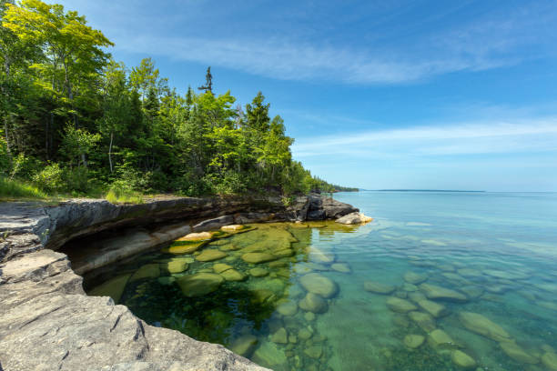

Chicago

Start your Great Loop journey in the Windy City! Chicago offers vibrant waterfront scenes, world-class dining, and iconic attractions
like Navy Pier and Millennium Park. Boaters can enjoy cruising along Lake Michigan and exploring the Chicago River. Don't miss out on
the architectural boat tour for a unique perspective of the city skyline!
Mackinac Island

Known for its picturesque beauty and Victorian charm, Mackinac Island is a beloved stop on the Great Loop route. Boaters can dock at
the island's marinas and explore its historic downtown, visit the famous Grand Hotel, and take in stunning views of the Straits of
Mackinac. Don't forget to try the island's famous fudge, a sweet treat you can't resist!
Traverse City
Nestled along the shores of Grand Traverse Bay, Traverse City is a boater's paradise. Visitors can enjoy sailing, fishing, and watersports
on the bay, as well as explore the area's renowned wineries, breweries, and cherry orchards. Make sure to visit Sleeping Bear
Dunes National Lakeshore for breathtaking views of Lake Michigan's coastline!
Bayfield
Located on the shores of Lake Superior, Bayfield is a charming waterfront town with a rich maritime history. Boaters can dock at the city
marina and explore the Apostle Islands National Lakeshore, known for its pristine beaches, sea caves, and historic lighthouses.
Don't miss the opportunity to go kayaking around the Apostle Islands for a closer look at its natural beauty!
Port Huron

Situated at the southern end of Lake Huron, Port Huron is a popular stop for boaters on the Great Loop. Visitors can explore the city's
maritime heritage at the Great Lakes Maritime Center, stroll along the waterfront boardwalk, and admire the iconic Blue Water Bridge.
Make sure to catch a beautiful sunset over Lake Huron for a memorable experience!